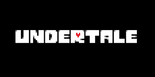

Undertale (estilizado como UNDERTALE) é um RPG eletrônico criado pelo desenvolvedor independente norte-americano Toby Fox (Robert F. Fox). Nele, o jogador pode controlar uma criança humana que caiu em uma caverna no subsolo de uma montanha, uma região grande e isolada sob a superfície da Terra, separada por uma barreira mágica. Vários monstros podem ser encontrados durante sua missão para retornar à superfície, principalmente através do sistema de combate; o jogador navega pelos ataques em formato bullet hell do oponente e pode optar por pacificar ou subjugar os monstros para poupá-los em vez de assassiná-los. Essas escolhas causam mudanças no diálogo, nos personagens e na história com base nos resultados.
Excluindo as artes e designs de personagens feitos por Temmie Chang, Toby Fox desenvolveu a totalidade da obra de forma independente, incluindo o roteiro e a música. O jogo teve inspiração em diversas mídias, como a série de jogos Mother, Touhou Project, Moon RPG, e na comédia britânica Mr. Bean. Undertale foi inicialmente planejado para durar duas horas e foi programado para ser lançado em meados de 2014, mas o desenvolvimento foi adiado para o ano seguinte.
O jogo foi desenvolvido no GameMaker Studio 2 entre 2013 e 2015, lançado para Microsoft Windows e OS X em 15 de setembro de 2015, e depois para o Linux em 17 de julho de 2016, e PlayStation 4 e PlayStation Vita em 15 de agosto de 2017. Uma versão para o Nintendo Switch foi lançada em 18 de setembro de 2018. A versão de Xbox foi lançada em 17 de março de 2021. Deste então, foi aclamado pelo seu roteiro, material temático, sistema de combate intuitivo, trilha musical e originalidade, com elogios direcionados à sua história, diálogo e personagens. Ultrapassando mais de um milhão de cópias vendidas, foi indicado a vários prêmios e reconhecimentos, incluindo Jogo do Ano por várias publicações e convenções especializadas em jogos eletrônicos. O primeiro capítulo de um jogo relacionado, Deltarune, foi lançado em 2018, e o segundo em 2021.